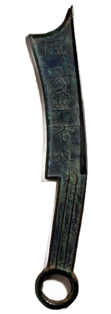

夏、商、周的货币之天然货币：
新石器时代晚期，随着社会组织结构的发展，生产工具的改进，人类社会逐渐出现了社会分工。产品有了剩余，交换的需求随之产生。一些经常交易的实用品逐渐成为实物货币，如贝、布匹、金属块等

贝币:
贝壳作为货币的优点 1.材质形状：大小适中，便于携带，便于计数等 2.获取难度：当时比较容易获得，但是又比较稀有的东西

四大货币体系:
布币流行于两周、三晋、郑卫等农业区域，即今黄河中游的河南、山西、河北地区。布钱原意为流布久远。布，源出于锄草农具“镈”〔bo博〕，简写为尃，音转借为布。

刀币主要由齐、燕、赵三国铸造发行，流通于今山东、河北、内蒙古、东北及山西北部，即当时的东方渔猎和手工业发达地区。刀在这些地区是普遍有用的渔猎工具，在一个较长时间内被用作交换媒介，逐渐形成一般等价物，最后采取货币形式。